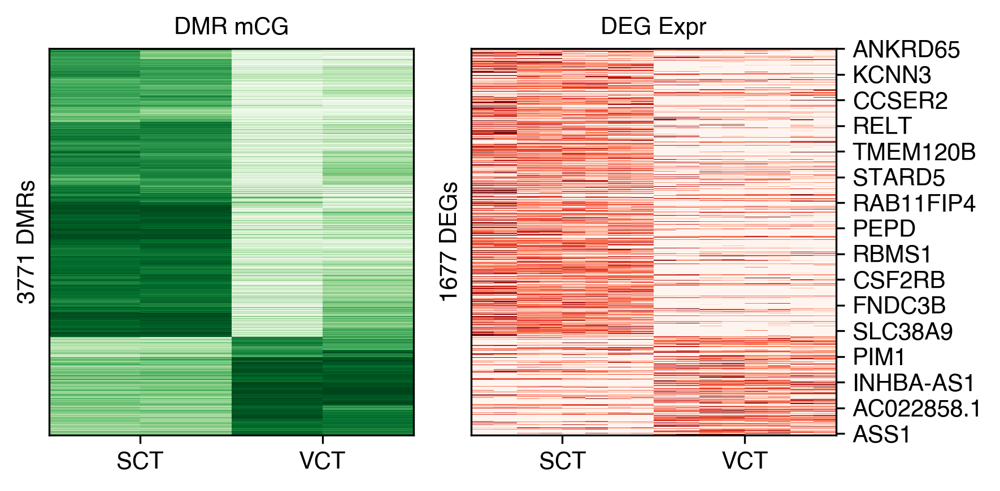
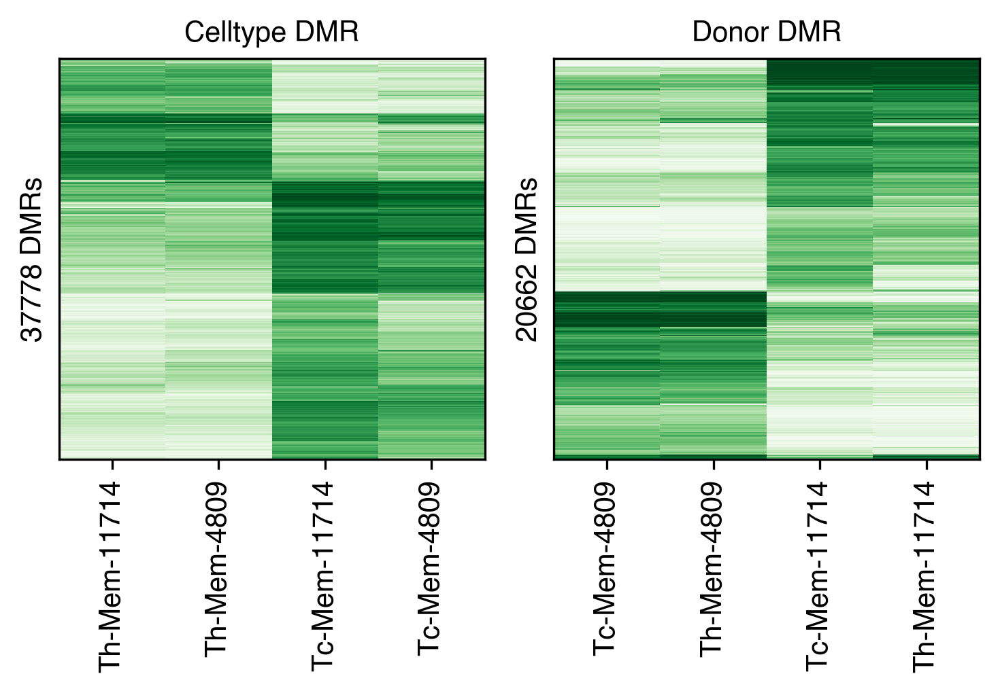
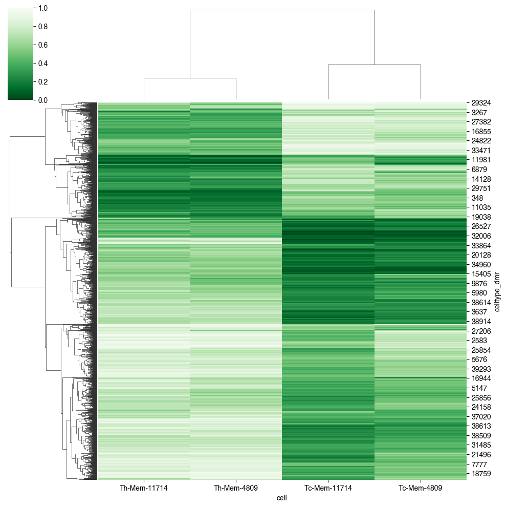
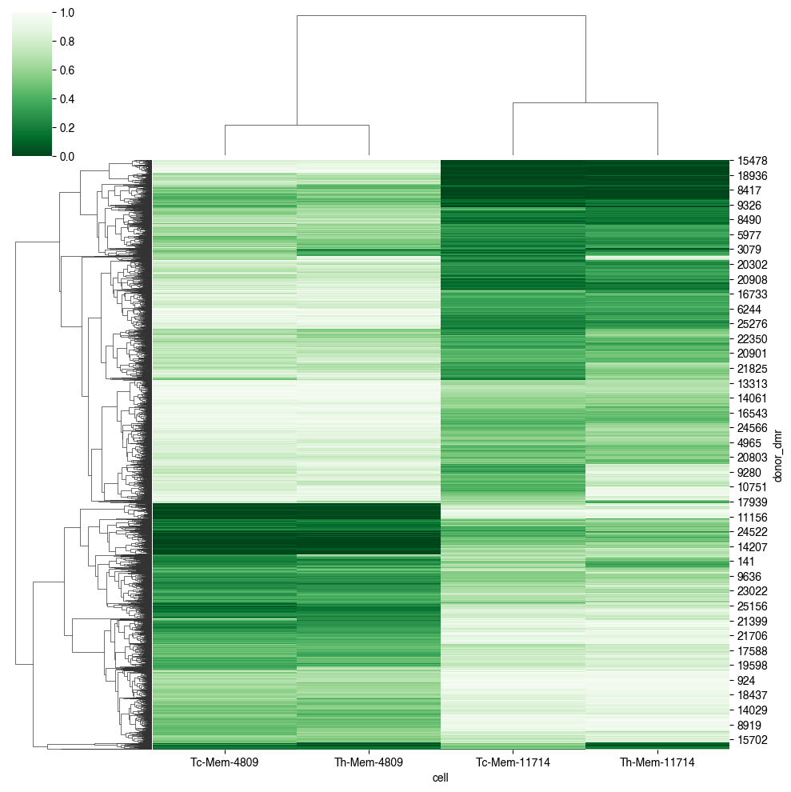
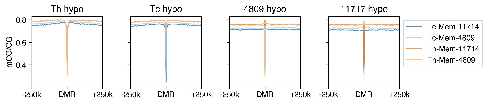
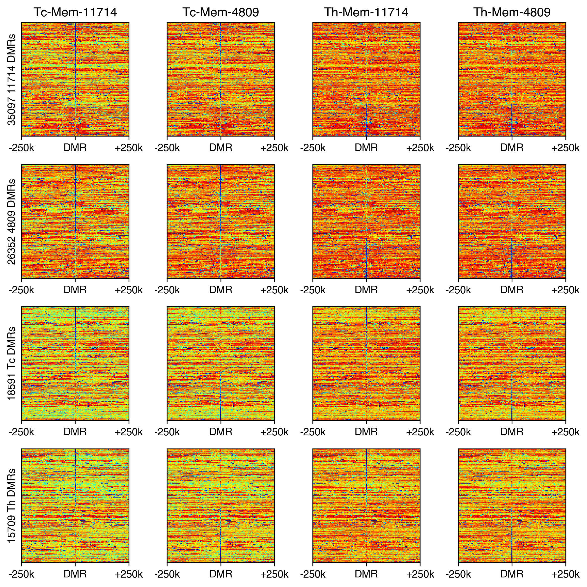

11. PMD Hema Tmem#
Part of the Fig. 2 chapter — see it for the panel-by-panel map. The first code cell sets ENTEX_ROOT and activates the no-overwrite guard (see the Reproduction guide). Outputs shown are the author’s original run.
📥 Required input files#
This notebook reads the following files (paths resolve from ENTEX_ROOT/REF_ROOT; the setup cell sets them). See the chapter’s inputs.md for RAW-vs-derived tags.
f'{REF_ROOT}/hg38/gencode/v30/gencode.v30.annotation.gene.flat.tsv.gz'· ref: gencodef'{indir}scRNA/{group}/{study}/{group}_{study}.h5ad'· scRNA/exprf'{outdir}bulkexpr_{study}.hdf'· expressionf'{outdir}design_{study}.hdf'· otherf'{outdir}DEG_Th-Mem_Tc-Mem_stats.hdf'· otherf'{peak_ct}.split50.slop25kb.500b.{mc_ct.split("/")[-1]}.CGN-Merge.tsv'· tablef'{peak_ct}.split0.slop25kb.500b.{mc_ct.split("/")[-1]}.CGN-Merge.tsv'· tablef'{outdir}{group_name}_dmr.mcds'· mC matrix (mcds)f'{outdir}celltype_dmr.closest_tss.txt'· DMRf'{peak_ct}.split1.slop250kb.5kb.{mc_ct.split("/")[-1]}.CGN-Merge.tsv'· table
# === Reproduction setup — edit ENTEX_ROOT / REF_ROOT for your machine ===
import os, sys
ENTEX_ROOT = os.environ.get('ENTEX_ROOT', '/large_storage/zhoulab/zhoujt/project/ENTEx')
REF_ROOT = os.environ.get('REF_ROOT', '/large_storage/zhoulab/ref')
BOOK_ROOT = os.environ.get('BOOK_ROOT', f'{ENTEX_ROOT}/analysis/HumanCellEpigenomeAtlas')
sys.path.insert(0, BOOK_ROOT)
os.chdir(f'{ENTEX_ROOT}/analysis') # original working directory
import repro_guard # no-overwrite guard (default: skip existing)
import os
import time
import numpy as np
import pandas as pd
from glob import glob
import seaborn as sns
import matplotlib as mpl
import matplotlib.pyplot as plt
from concurrent.futures import ProcessPoolExecutor, as_completed
import cooler
import anndata
import scanpy as sc
import scanpy.external as sce
from sklearn.preprocessing import normalize
from ALLCools.clustering import *
from ALLCools.plot import *
from ALLCools.mcds import MCDS
from ALLCools.integration.seurat_class import SeuratIntegration
mpl.style.use('default')
mpl.rcParams['pdf.fonttype'] = 42
mpl.rcParams['ps.fonttype'] = 42
mpl.rcParams['font.family'] = 'sans-serif'
mpl.rcParams['font.sans-serif'] = 'Helvetica'
def dump_embedding(adata, name, n_dim=2):
# put manifold coordinates into adata.obs
for i in range(n_dim):
adata.obs[f'{name}_{i}'] = adata.obsm[f'X_{name}'][:, i]
return adata
chrom_size_path = f'{REF_ROOT}/hg38/fasta/hg38.main.chrom.sizes'
chrom_sizes = cooler.read_chromsizes(chrom_size_path, all_names=True)
chrom_sizes = chrom_sizes.iloc[:22]
def expand_bed(input_file, window_size, window, split, min_split_size):
dist = window_size * window
dist_str = num2str(dist)
ws_str = num2str(window_size)
bed = pd.read_csv(input_file, sep='\t', header=None, index_col=None, usecols=[0,1,2], names=['chrom', 'start', 'end'])
bed = bed.loc[bed['chrom'].isin(chrom_sizes.index)]
if split==0:
mid = ((bed['start'] + bed['end']) // 2).astype(int)
bed['start'], bed['end'] = mid.copy(), mid.copy()
bed['start'] = bed['start'] - dist
bed['end'] = bed['end'] + dist
bed = bed.loc[(bed['start']>0) & (bed['end']<bed['chrom'].map(chrom_sizes))]
bed_new = []
for idx,xx,yy,zz in bed.reset_index().values:
if split>0:
split_size = (zz-yy-2*dist) / split
if split_size<min_split_size:
continue
for i in range(window):
bed_new.append([xx, yy+window_size*i, yy+window_size*(i+1), f'{idx}_{i}'])
# if (yy+dist)<(zz-dist):
# bed_new.append([xx, yy+dist, zz-dist])
if split>0:
for i in range(split):
bed_new.append([xx, yy+dist+split_size*i, yy+dist+split_size*(i+1), f'{idx}_{window+i}'])
for i in range(window):
bed_new.append([xx, zz-dist+window_size*i, zz-dist+window_size*(i+1), f'{idx}_{window+split+i}'])
print(len(bed_new))
bed_new = pd.DataFrame(bed_new)
bed_new[[1,2]] = np.around(bed_new[[1,2]], decimals=0).astype(int)
bed_new.to_csv(input_file.replace('.bed',f'.split{split}.slop{dist_str}b.{ws_str}b.bed'), sep='\t', header=False, index=False)
return dist_str, ws_str
def num2str(num):
if num>=1e6:
num_str = f'{int(num//1e6)}m'
elif num>=1e3:
num_str = f'{int(num//1e3)}k'
else:
num_str = f'{num}'
return num_str
def generate_flankmap(peak_group, mc_group, window_size=500, window=50, split=0, min_split_size=1):
dist_str, ws_str = expand_bed(f'{peak_group}.bed', window_size=window_size, window=window, split=split, min_split_size=min_split_size)
time.sleep(3)
cmd = f'bigWigAverageOverBed {mc_group}.CGN-Merge.frac.bw {peak_group}.split{split}.slop{dist_str}b.{ws_str}b.bed {peak_group}.split{split}.slop{dist_str}b.{ws_str}b.{mc_group.split("/")[-1]}.CGN-Merge.tsv'
os.system(cmd)
return
group_name = 'Hema-Tmem-PBMC'
indir = f'{ENTEX_ROOT}/'
outdir = f'{ENTEX_ROOT}/analysis/PMD_RNA/{group_name}/'
group = 'Blood'
study = 'Hao2021'
gene_meta = pd.read_csv(f'{REF_ROOT}/hg38/gencode/v30/gencode.v30.annotation.gene.flat.tsv.gz', sep='\t', header=0)
gene_meta['gene_id_idx'] = gene_meta['gene_id'].str.split('.').str[0]
ens2gene = gene_meta.set_index('gene_id_idx')['gene_name'].to_dict()
gene2ens = gene_meta.set_index('gene_name')['gene_id_idx'].to_dict()
adata = anndata.read_h5ad(f'{indir}scRNA/{group}/{study}/{group}_{study}.h5ad')
adata
# marker = pd.Index(['TP63', 'KAZN', 'PRDM2', 'TNFRSF1B', 'SH2D5', 'PAFAH2', 'EXTL1', 'NCMAP'])
# marker = marker[marker.isin(gene2ens)]
# marker
# adata.obs['total_counts'] = adata.raw.X.sum(axis=1).A1
# marker_expr = pd.DataFrame(adata.raw[:, marker.map(gene2ens)].X.toarray(), index=adata.obs.index, columns=marker)
# marker_expr = marker_expr / adata.obs['total_counts'].values[:, None]
# marker_expr = np.log1p(marker_expr)
# ds = 0.5
# coord_base = 'tsne'
# # adata.obsm[f'X_{coord_base}'] = adata.obsm[f'RNA_pc{npc}hm_{coord_base}'].copy()
# # dump_embedding(adata, coord_base)
# fig, axes = plt.subplots(1, 2, figsize=(12, 4), dpi=300, constrained_layout=True)
# tmp = adata.obs.copy()
# for j,yy in enumerate(['celltype', 'batch']):
# ax = axes[j]
# ax.scatter(adata.obs['tsne_0'], adata.obs['tsne_1'], s=ds, edgecolor='none', rasterized=True, color=(0.8,0.8,0.8))
# _ = categorical_scatter(data=tmp,
# ax=ax,
# coord_base=coord_base,
# hue=yy,
# # text_anno=yy,
# labelsize=6,
# s=ds*2,
# palette='tab20',
# scatter_kws={'rasterized':True},
# # legend_kws={'ncol':1},
# show_legend=True
# )
# ax.set_title(study, fontsize=12)
# ncol = 4
# nrow = (len(marker) - 1) // ncol + 1
# fig, axes = plt.subplots(nrow, ncol, figsize=(4*ncol,3*nrow), dpi=300, constrained_layout=True)
# tmp = adata.obs.copy()
# for i,k in enumerate(marker):
# ax = axes.flatten()[i]
# ax.set_title(k, fontsize=12)
# _ = continuous_scatter(data=tmp,
# ax=ax,
# coord_base=coord_base,
# hue=marker_expr[k],
# s=ds,
# labelsize=12,
# max_points=None,
# scatter_kws={'rasterized':True},
# # hue_norm=[vmin, vmax],
# )
# for ax in axes.flatten()[len(marker):]:
# ax.axis('off')
adata.obs[['celltype', 'batch']].value_counts().unstack()
leg = {'Th': [['CD4 Naive'], ['CD4 TCM', 'CD4 TEM']],
'Tc': [['CD8 Naive'], ['CD8 TCM', 'CD8 TEM']],
'B': [['B naive'], ['B memory']]}
design = []
expr = []
for indiv in np.sort(adata.obs['donor_id'].unique()):
for group in leg:
for xx,ct in zip(['Naive', 'Mem'], leg[group]):
tmp = adata.raw.X[adata.obs['celltype.l2'].isin(ct)].sum(axis=0).A1
expr.append(tmp)
design.append([indiv, f'{group}-{xx}'])
design = pd.DataFrame(design, columns=['donor', 'celltype'])
expr = pd.DataFrame(expr, columns=adata.raw.var.index)
expr = expr.loc[:, expr.columns.isin(gene_meta['gene_id_idx'])]
expr.to_hdf(f'{outdir}bulkexpr_{study}.hdf', key='data')
design.to_hdf(f'{outdir}design_{study}.hdf', key='data')
expr = pd.read_hdf(f'{outdir}bulkexpr_{study}.hdf', key='data')
design = pd.read_hdf(f'{outdir}design_{study}.hdf', key='data')
gene_meta['TSS'] = gene_meta['start'].copy()
selg = (gene_meta['strand']=='-')
gene_meta.loc[selg, 'TSS'] = gene_meta.loc[selg, 'end']
gene_meta['length'] = gene_meta['end'] - gene_meta['start']
tmp = gene_meta.set_index('gene_id_idx').loc[expr.columns]
sns.histplot(tmp['length'], bins=100, log_scale=(10, None))
print(np.mean(tmp['length']), np.median(tmp['length']))
## write gene bed
tmp[['chrom', 'start', 'end', 'gene_name', 'strand']].sort_values(by=['chrom', 'start', 'end']).reset_index()[['chrom', 'start', 'end', 'index', 'gene_name', 'strand']].to_csv(f'{outdir}gene.bed', sep='\t', index=False, header=False)
## write tss bed
tmp[['chrom', 'TSS', 'gene_name', 'strand']].sort_values(by=['chrom', 'TSS']).reset_index()[['chrom', 'TSS', 'TSS', 'index', 'gene_name', 'strand']].to_csv(f'{outdir}tss.bed', sep='\t', index=False, header=False)
bins = cooler.binnify(chrom_sizes, 20000)
bins['index'] = bins['chrom'].astype(str) + '_' + (bins['start'] // 20000).astype(str)
bins.to_csv(f'{outdir}hg38_20kbin.bed', sep='\t', header=False, index=False)
sels = design.loc[design['celltype'].isin(['Th-Mem', 'Tc-Mem'])].sort_values('celltype').index
exprtmp = expr.loc[sels]
designtmp = design.loc[sels]
from pydeseq2.dds import DeseqDataSet
from pydeseq2.default_inference import DefaultInference
from pydeseq2.ds import DeseqStats
from pydeseq2.utils import load_example_data
from statsmodels.stats.multitest import multipletests as FDR
genes_to_keep = exprtmp.columns[exprtmp.sum(axis=0) >= 10]
counts_df = exprtmp[genes_to_keep]
inference = DefaultInference(n_cpus=8)
dds = DeseqDataSet(
counts=counts_df,
metadata=designtmp,
design_factors=['donor', 'celltype'],
refit_cooks=True,
inference=inference,
# n_cpus=8, # n_cpus can be specified here or in the inference object
)
dds.deseq2()
stat_res = DeseqStats(dds, contrast=['celltype', 'Th-Mem', 'Tc-Mem'], inference=inference)
stat_res.summary()
stat_res.results_df.to_hdf(f'{outdir}DEG_Th-Mem_Tc-Mem_stats.hdf', key='data')
deg_stats = stat_res.results_df.copy()
deg_stats = pd.read_hdf(f'{outdir}DEG_Th-Mem_Tc-Mem_stats.hdf', key='data')
deg_stats['pvalue'] = deg_stats['pvalue'].fillna(1)
deg_stats['fdr'] = FDR(deg_stats['pvalue'], alpha=0.05, method='fdr_bh')[1]
tmp = deg_stats.copy()
fig, ax = plt.subplots(figsize=(4,3), dpi=300)
selc = (np.abs(tmp['log2FoldChange'])>1) & (tmp['fdr']<1e-5)
ax.scatter(tmp.loc[~selc, 'log2FoldChange'], -np.log10(tmp.loc[~selc, 'fdr']), s=0.1, c='k', edgecolor='none')
ax.scatter(tmp.loc[selc, 'log2FoldChange'], -np.log10(tmp.loc[selc, 'fdr']), s=0.5, c='r', edgecolor='none')
ax.set_xlabel('log2FC Th-Mem/Tc-Mem')
ax.set_ylabel('-log10 FDR')
print(selc.sum())
deg1 = deg_stats.index[(deg_stats['log2FoldChange']>1) & (deg_stats['fdr']<1e-5)]
deg2 = deg_stats.index[(deg_stats['log2FoldChange']<-1) & (deg_stats['fdr']<1e-5)]
print(len(deg1), len(deg2))
tmp = gene_meta.set_index('gene_id_idx').loc[deg1].sort_values(['chrom', 'start', 'end']).reset_index()[['chrom','start','end', 'index', 'gene_name', 'strand']]
tmp.to_csv(f'{outdir}{group_name}_Th-Mem_gene.bed', sep='\t', header=None, index=None)
deg1 = tmp.index.copy()
tmp = gene_meta.set_index('gene_id_idx').loc[deg2].sort_values(['chrom', 'start', 'end']).reset_index()[['chrom','start','end', 'index', 'gene_name', 'strand']]
tmp.to_csv(f'{outdir}{group_name}_Tc-Mem_gene.bed', sep='\t', header=None, index=None)
deg2 = tmp.index.copy()
# dmr_list = np.sort(glob(f'{outdir}*gene.bed'))
# dmr_list = np.sort([xx.replace('.bed', '') for xx in dmr_list])
dmr_list = np.array([f'{outdir}hg38_20kbin', f'{outdir}gene',
f'{outdir}{group_name}_Th-Mem_gene',
f'{outdir}{group_name}_Tc-Mem_gene',
])
bw_list = glob(f'{indir}analysis/PMD_DMR/{group_name}/*.frac.bw')
bw_list = np.sort([xx.replace('.CGN-Merge.frac.bw', '') for xx in bw_list])
print(dmr_list, bw_list)
cpu = 32
with ProcessPoolExecutor(cpu) as executor:
futures = {}
for peak_ct in dmr_list:
for mc_ct in bw_list:
future = executor.submit(
generate_flankmap,
peak_group=peak_ct,
mc_group=mc_ct,
window_size=500, window=50, split=50, min_split_size=1
)
futures[future] = f'{peak_ct}-{mc_ct}'
result = {}
for future in as_completed(futures):
ct = futures[future]
result[ct] = future.result()
print(f'{ct} finished')
ave_list = []
data_list = []
for i,peak_ct in enumerate(dmr_list):
ave_tmp = []
data_tmp = []
bed = pd.read_csv(f'{peak_ct}.bed', sep='\t', index_col=3, header=None)
for j,mc_ct in enumerate(bw_list):
data = pd.read_csv(f'{peak_ct}.split50.slop25kb.500b.{mc_ct.split("/")[-1]}.CGN-Merge.tsv', sep='\t', header=None, index_col=0)
ratio = data[5].values.reshape((-1, 150))
cov = data[2].values.reshape((-1, 150))
print((cov==0).sum() / cov.shape[0] / cov.shape[1])
if j==0:
idx = data.index.str.split('_').str[0].astype(int).unique()
idx = bed.index[idx]
binfilter = pd.Index((cov>0).sum(axis=1)) > (0.5*cov.shape[1])
else:
binfilter &= pd.Index((cov>0).sum(axis=1) > (0.5*cov.shape[1]))
if bed.shape[1]==5:
ratio[bed.loc[idx, 5]=='-'] = ratio[bed.loc[idx, 5]=='-'][:, ::-1]
ratio[cov==0] = np.nan
data_tmp.append(pd.DataFrame(ratio, index=idx))
print(binfilter.sum(), binfilter.shape[0])
ave_tmp = [np.nanmean(data[binfilter], axis=0) for data in data_tmp]
data_tmp = [data[binfilter].fillna(1) for data in data_tmp]
ave_list.append(ave_tmp)
data_list.append(data_tmp)
titles = ['Bins', 'All', 'Th-Mem', 'Tc-Mem']
fig, axes = plt.subplots(1, 4, figsize=(10,2), dpi=300, sharey='all', sharex='all')
for i,peak_ct in enumerate(dmr_list):
ax = axes[i]
for j,mc_ct in enumerate(bw_list):
ax.plot(np.arange(150), ave_list[i][j], color=plt.cm.tab20(j),
label=mc_ct.split('/')[-1], linewidth=1, alpha=0.8)
ax.set_title(f'{titles[i]} gene')
ax.set_xlim([-0.5, 149.5])
ax.set_ylim([0.2, 0.8])
ax.set_xticks([-0.5, 49.5, 99.5, 149.5])
ax.set_xticklabels(['-25k', 'TSS', 'TES', '+25k'])
ax.legend(bbox_to_anchor=(1,1))
fig.tight_layout()
# fig.savefig(f'{outdir}{group_name}_DMR_flank_lineplot.pdf', transparent=True)
titles = ['Bins', 'All', 'Th-Mem', 'Tc-Mem']
fig, axes = plt.subplots(4, 4, figsize=(8,8), dpi=300, sharey='row')
for i,peak_ct in enumerate(dmr_list):
for j,mc_ct in enumerate(bw_list):
ax = axes[i,j]
ratio = data_list[i][j].values
idx = np.argsort(ratio[:, 50:100].mean(axis=1))
if j==0:
ax.set_ylabel(f'{ratio.shape[0]} {titles[i]} gene')
ax.imshow(ratio[idx], cmap='jet', vmin=0.2, vmax=1.0, aspect='auto',
interpolation='none', rasterized=True)
ax.set_yticks([])
ax.set_xlim([-0.5, 149.5])
ax.set_xticks([-0.5, 49.5, 99.5, 149.5])
ax.set_xticklabels(['-25k', 'TSS', 'TES', '+25k'])
if i==0:
ax.set_title(f'{mc_ct.split("/")[-1]}')
fig.tight_layout()
# fig.savefig(f'{outdir}{group_name}_DMR_flank_heatmap.pdf', transparent=True)
gene_meta
tmp = gene_meta.set_index('gene_id_idx').loc[deg1].sort_values(['chrom', 'TSS']).reset_index()[['chrom','TSS','TSS', 'index', 'gene_name', 'strand']]
tmp.to_csv(f'{outdir}{group_name}_Th-Mem_tss.bed', sep='\t', header=None, index=None)
deg1 = tmp.index.copy()
tmp = gene_meta.set_index('gene_id_idx').loc[deg2].sort_values(['chrom', 'TSS']).reset_index()[['chrom','TSS','TSS', 'index', 'gene_name', 'strand']]
tmp.to_csv(f'{outdir}{group_name}_Tc-Mem_tss.bed', sep='\t', header=None, index=None)
deg2 = tmp.index.copy()
# dmr_list = np.sort(glob(f'{outdir}*gene.bed'))
# dmr_list = np.sort([xx.replace('.bed', '') for xx in dmr_list])
dmr_list = np.array([f'{outdir}hg38_20kbin', f'{outdir}tss',
f'{outdir}{group_name}_Th-Mem_tss',
f'{outdir}{group_name}_Tc-Mem_tss',
])
bw_list = glob(f'{indir}analysis/PMD_DMR/{group_name}/*.frac.bw')
bw_list = np.sort([xx.replace('.CGN-Merge.frac.bw', '') for xx in bw_list])
print(dmr_list, bw_list)
cpu = 32
with ProcessPoolExecutor(cpu) as executor:
futures = {}
for peak_ct in dmr_list:
for mc_ct in bw_list:
future = executor.submit(
generate_flankmap,
peak_group=peak_ct,
mc_group=mc_ct,
window_size=500, window=50, split=0, min_split_size=1
)
futures[future] = f'{peak_ct}-{mc_ct}'
result = {}
for future in as_completed(futures):
ct = futures[future]
result[ct] = future.result()
print(f'{ct} finished')
ave_list = []
data_list = []
for i,peak_ct in enumerate(dmr_list):
ave_tmp = []
data_tmp = []
bed = pd.read_csv(f'{peak_ct}.bed', sep='\t', index_col=3, header=None)
for j,mc_ct in enumerate(bw_list):
data = pd.read_csv(f'{peak_ct}.split0.slop25kb.500b.{mc_ct.split("/")[-1]}.CGN-Merge.tsv', sep='\t', header=None, index_col=0)
ratio = data[5].values.reshape((-1, 100))
cov = data[2].values.reshape((-1, 100))
print((cov==0).sum() / cov.shape[0] / cov.shape[1])
if j==0:
idx = data.index.str.split('_').str[0].astype(int).unique()
idx = bed.index[idx]
binfilter = pd.Index((cov>0).sum(axis=1)) > (0.5*cov.shape[1])
else:
binfilter &= pd.Index((cov>0).sum(axis=1) > (0.5*cov.shape[1]))
if bed.shape[1]==5:
ratio[bed.loc[idx, 5]=='-'] = ratio[bed.loc[idx, 5]=='-'][:, ::-1]
ratio[cov==0] = np.nan
data_tmp.append(pd.DataFrame(ratio, index=idx))
print(binfilter.sum(), binfilter.shape[0])
ave_tmp = [np.nanmean(data[binfilter], axis=0) for data in data_tmp]
data_tmp = [data[binfilter].fillna(1) for data in data_tmp]
ave_list.append(ave_tmp)
data_list.append(data_tmp)
titles = ['Bins', 'All', 'Th-Mem', 'Tc-Mem']
fig, axes = plt.subplots(1, 4, figsize=(10,2), dpi=300, sharey='all', sharex='all')
for i,peak_ct in enumerate(dmr_list):
ax = axes[i]
for j,mc_ct in enumerate(bw_list):
ax.plot(np.arange(100), ave_list[i][j], color=plt.cm.tab20(j),
label=mc_ct.split('/')[-1], linewidth=1, alpha=0.8)
ax.set_title(f'{titles[i]} gene')
ax.set_xlim([-0.5, 99.5])
ax.set_ylim([0.2, 0.85])
ax.set_xticks([-0.5, 49.5, 99.5])
ax.set_xticklabels(['-25k', 'TSS', '+25k'])
ax.legend(bbox_to_anchor=(1,1))
fig.tight_layout()
# fig.savefig(f'{outdir}{group_name}_DMR_flank_lineplot.pdf', transparent=True)
data_list[2][0].mean(axis=0)
data_list[1][0].mean(axis=0)
data_list[3][0].mean(axis=0)
titles = ['Bins', 'All', 'Th-Mem', 'Tc-Mem']
fig, axes = plt.subplots(4, 4, figsize=(8,8), dpi=300, sharey='row')
for i,peak_ct in enumerate(dmr_list):
for j,mc_ct in enumerate(bw_list):
ax = axes[i,j]
ratio = data_list[i][j].values
idx = np.argsort(ratio.mean(axis=1))
if j==0:
ax.set_ylabel(f'{ratio.shape[0]} {titles[i]} gene')
ax.imshow(ratio[idx], cmap='jet', vmin=0.4, vmax=1.0, aspect='auto',
interpolation='none', rasterized=True)
ax.set_yticks([])
ax.set_xlim([-0.5, 99.5])
ax.set_xticks([-0.5, 49.5, 99.5])
ax.set_xticklabels(['-25k', 'TSS', '+25k'])
if i==0:
ax.set_title(f'{mc_ct.split("/")[-1]}')
fig.tight_layout()
# fig.savefig(f'{outdir}{group_name}_DMR_flank_heatmap.pdf', transparent=True)
# [pipeline/shell command — commented out; output is cached on disk]
# cat *donor_dmr/dmr.bed | sort -k1,1 -k2,2n -k3,3n -u | awk '{printf("%s\t%d\t%d\t%d\n", $1,$2,$3,NR)}' > donor_dmr.bed
# cat *celltype_dmr/dmr.bed | sort -k1,1 -k2,2n -k3,3n -u | awk '{printf("%s\t%d\t%d\t%d\n", $1,$2,$3,NR)}' > celltype_dmr.bed
# ls *.CGN-Merge.allc.tsv.gz | awk -v p=$PWD '{printf("%s/%s\n", p, $1)}' > allclist_bulk.txt
# paste <(awk -F'/' '{print $NF}' allclist_bulk.txt | cut -d. -f1) allclist_bulk.txt > allclist_bulk.tsv
# allcools generate-dataset --allc_table allclist_bulk.tsv --output_path Hema-Tmem-PBMC_dmr.mcds --chrom_size_path /large_storage/zhoulab/ref/hg38/fasta/hg38.main.chrom.sizes --obs_dim cell --cpu 20 --chunk_size 1 --regions donor_dmr donor_dmr.bed --regions celltype_dmr celltype_dmr.bed --quantifiers donor_dmr count CGN --quantifiers celltype_dmr count CGN
idx_list, both_list, data_list = [], [], []
mcds = MCDS.open(f'{outdir}{group_name}_dmr.mcds', var_dim='celltype_dmr')
mcds
mc = mcds.sel({'count_type':'mc'})['celltype_dmr_da'].to_pandas()
cov = mcds.sel({'count_type':'cov'})['celltype_dmr_da'].to_pandas()
data = (mc / cov).fillna(1).T
diff1 = data['Tc-Mem-11714'] - data['Th-Mem-11714']
diff2 = data['Tc-Mem-4809'] - data['Th-Mem-4809']
hypo_both = (diff1 > 0.25) & (diff2 > 0.25)
hyper_both = (diff1 < -0.25) & (diff2 < -0.25)
both_dmr = hypo_both | hyper_both
any_dmr = (np.abs(diff1) > 0.25) | (np.abs(diff2) > 0.25)
print(both_dmr.sum() / any_dmr.sum(), any_dmr.sum() / any_dmr.shape[0])
idx_list.append(diff1[np.abs(diff1) > 0.25].sort_values().index)
idx_list.append(diff2[np.abs(diff2) > 0.25].sort_values().index)
both_list += [hypo_both, hyper_both]
data_list.append(data.loc[any_dmr])
# seldmr = np.random.choice(np.arange(any_dmr.sum()), 5000, False)
# cg = sns.clustermap(data.loc[any_dmr].iloc[seldmr], metric='euclidean', cmap='Greens_r')
tss = gene_meta.set_index('gene_id_idx').loc[expr.columns].sort_values(['chrom', 'start', 'end']).reset_index()
tss['end'] = tss['start'].copy()
tss['start'] = tss['start'] - 1
tss[['chrom', 'start', 'end', 'index', 'gene_name', 'strand']].to_csv('PMD_DMR/Epi-TPB/tss.bed', sep='\t', header=False, index=False)
closest_gene = pd.read_csv(f'{outdir}celltype_dmr.closest_tss.txt', sep='\t', header=None, index_col=None)
closest_gene
seldmr = data.index[both_dmr]
selg = deg_stats.index[(np.abs(deg_stats['log2FoldChange'])>1) & (deg_stats['fdr']<1e-5)]
dmr_gene_map = closest_gene.set_index(3)[7]
dmr_gene_map = dmr_gene_map.loc[dmr_gene_map.index.isin(seldmr) & dmr_gene_map.isin(selg)]
cg = sns.clustermap(data.loc[dmr_gene_map.index], metric='cosine', cmap='Greens_r')
rorder = cg.dendrogram_row.reordered_ind.copy()
corder = cg.dendrogram_col.reordered_ind.copy()[::-1]
exprtmp = exprtmp / exprtmp.sum(axis=1).values[:, None] * 1e6
nrow = dmr_gene_map.shape[0]
print(nrow)
fig, axes = plt.subplots(1, 2, figsize=(6,3), dpi=300)
ax = axes[0]
ax.imshow(data.loc[dmr_gene_map.index].iloc[rorder].iloc[:, corder],
cmap='Greens_r', aspect='auto', interpolation='none', rasterized=True)
ax.set_title('DMR mCG', fontsize=10)
# sns.despine(ax=ax, left=True, bottom=True)
# ax.set_xticks(np.arange(data.shape[1]))
# ax.set_xticklabels(data.columns[corder], rotation=90)
ax.set_xticks([0.5, 2.5])
ax.set_xticklabels(['SCT', 'VCT'])
ax.set_yticks([])
ax.set_ylabel(f'{dmr_gene_map.index.unique().shape[0]} DMRs')
ax = axes[1]
ax.imshow(zscore(exprtmp.T.loc[dmr_gene_map.values].iloc[rorder], axis=1),
cmap='Reds', vmin=0, vmax=2, aspect='auto', interpolation='none', rasterized=True)
ax.set_title('DEG Expr', fontsize=10)
# sns.despine(ax=ax, left=True, bottom=True)
ax.set_xticks([3.5, 11.5])
ax.set_xticklabels(['SCT', 'VCT'])
selidx = np.arange(0, nrow, nrow//15)
ax.tick_params(axis='y', right=True, left=False, labelright=True, labelleft=False)
ax.set_yticks(selidx)
ax.set_yticklabels(dmr_gene_map.map(ens2gene).values[selidx])
ax.set_ylabel(f'{dmr_gene_map.unique().shape[0]} DEGs')
fig.tight_layout()
fig.savefig(f'{outdir}{group_name}_DMR_Expr_heatmap.pdf', transparent=True)

mcds = MCDS.open(f'{outdir}{group_name}_dmr.mcds', var_dim='donor_dmr')
mcds
mcds.get_index('cell')
mc = mcds.sel({'count_type':'mc'})['donor_dmr_da'].to_pandas()
cov = mcds.sel({'count_type':'cov'})['donor_dmr_da'].to_pandas()
data = (mc / cov).fillna(1).T
diff1 = data['Tc-Mem-11714'] - data['Tc-Mem-4809']
diff2 = data['Th-Mem-11714'] - data['Th-Mem-4809']
hypo_both = (diff1 > 0.25) & (diff2 > 0.25)
hyper_both = (diff1 < -0.25) & (diff2 < -0.25)
both_dmr = hypo_both | hyper_both
any_dmr = (np.abs(diff1) > 0.25) | (np.abs(diff2) > 0.25)
print(both_dmr.sum() / any_dmr.sum(), any_dmr.sum() / any_dmr.shape[0])
idx_list.append(diff1[np.abs(diff1) > 0.25].sort_values().index)
idx_list.append(diff2[np.abs(diff2) > 0.25].sort_values().index)
both_list += [hypo_both, hyper_both]
data_list.append(data.loc[any_dmr])
# seldmr = np.random.choice(np.arange(any_dmr.sum()), 5000, False)
# cg = sns.clustermap(data.loc[any_dmr].iloc[seldmr], metric='euclidean', cmap='Greens_r')
fig, axes = plt.subplots(1, 2, figsize=(5,3.5), dpi=300)
for i,data in enumerate(data_list):
ax = axes[i]
seldmr = np.random.choice(np.arange(data.shape[0]), 5000, False)
cg = sns.clustermap(data.iloc[seldmr], metric='euclidean', cmap='Greens_r')
rorder = cg.dendrogram_row.reordered_ind.copy()
corder = cg.dendrogram_col.reordered_ind.copy()
ax.imshow(data.values[seldmr][rorder][:, corder],
cmap='Greens_r', aspect='auto', interpolation='none', rasterized=True)
ax.set_title(['Celltype DMR', 'Donor DMR'][i], fontsize=10)
# sns.despine(ax=ax, left=True, bottom=True)
# ax.set_xticks(np.arange(data.shape[1]))
# ax.set_xticklabels(data.columns[corder], rotation=90)
ax.set_xticks(np.arange(data.shape[1]))
ax.set_xticklabels(data.columns[corder].str.replace('PVT', 'SCT'), rotation=90)
ax.set_yticks([])
ax.set_ylabel(f'{data.shape[0]} DMRs')
fig.tight_layout()
fig.savefig(f'{outdir}{group_name}_DMR_heatmap.pdf', transparent=True)



chrom_size_path = f'{REF_ROOT}/hg38/fasta/hg38.main.chrom.sizes'
chrom_sizes = cooler.read_chromsizes(chrom_size_path, all_names=True)
chrom_sizes = chrom_sizes.iloc[:22]
def expand_bed(input_file, window_size, window, split, min_split_size):
dist = window_size * window
dist_str = num2str(dist)
ws_str = num2str(window_size)
bed = pd.read_csv(input_file, sep='\t', header=None, index_col=None, usecols=[0,1,2], names=['chrom', 'start', 'end'])
bed = bed.loc[bed['chrom'].isin(chrom_sizes.index)]
if split==0:
mid = ((bed['start'] + bed['end']) // 2).astype(int)
bed['start'], bed['end'] = mid.copy(), mid.copy()
bed['start'] = bed['start'] - dist
bed['end'] = bed['end'] + dist
bed = bed.loc[(bed['start']>0) & (bed['end']<bed['chrom'].map(chrom_sizes))]
bed_new = []
for idx,xx,yy,zz in bed.reset_index().values:
if split>0:
split_size = (zz-yy-2*dist) / split
if split_size<min_split_size:
continue
for i in range(window):
bed_new.append([xx, yy+window_size*i, yy+window_size*(i+1), f'{idx}_{i}'])
# if (yy+dist)<(zz-dist):
# bed_new.append([xx, yy+dist, zz-dist])
if split>0:
for i in range(split):
bed_new.append([xx, yy+dist+split_size*i, yy+dist+split_size*(i+1), f'{idx}_{window+i}'])
for i in range(window):
bed_new.append([xx, zz-dist+window_size*i, zz-dist+window_size*(i+1), f'{idx}_{window+split+i}'])
print(len(bed_new))
bed_new = pd.DataFrame(bed_new)
bed_new[[1,2]] = np.around(bed_new[[1,2]], decimals=0).astype(int)
bed_new.to_csv(input_file.replace('.bed',f'.split{split}.slop{dist_str}b.{ws_str}b.bed'), sep='\t', header=False, index=False)
return dist_str, ws_str
def num2str(num):
if num>=1e6:
num_str = f'{int(num//1e6)}m'
elif num>=1e3:
num_str = f'{int(num//1e3)}k'
else:
num_str = f'{num}'
return num_str
def generate_flankmap(peak_group, mc_group, window_size=500, window=50, split=0, min_split_size=1):
dist_str, ws_str = expand_bed(f'{peak_group}.bed', window_size=window_size, window=window, split=split, min_split_size=min_split_size)
time.sleep(3)
cmd = f'bigWigAverageOverBed {mc_group}.CGN-Merge.frac.bw {peak_group}.split{split}.slop{dist_str}b.{ws_str}b.bed {peak_group}.split{split}.slop{dist_str}b.{ws_str}b.{mc_group.split("/")[-1]}.CGN-Merge.tsv'
os.system(cmd)
return
dmr_list = np.sort(glob(f'{outdir}*_dmr.bed'))
dmr_list = np.sort([xx.replace('.bed', '') for xx in dmr_list])
bw_list = glob(f'{outdir}/*.frac.bw')
bw_list = np.sort([xx.replace('.CGN-Merge.frac.bw', '') for xx in bw_list])
print(dmr_list, bw_list)
cpu = 32
with ProcessPoolExecutor(cpu) as executor:
futures = {}
for peak_ct in dmr_list:
for mc_ct in bw_list:
future = executor.submit(
generate_flankmap,
peak_group=peak_ct,
mc_group=mc_ct,
window_size=5000, window=50, split=1, min_split_size=1
)
futures[future] = f'{peak_ct}-{mc_ct}'
result = {}
for future in as_completed(futures):
ct = futures[future]
result[ct] = future.result()
print(f'{ct} finished')
idx_list_old = idx_list.copy()
idx_list = idx_list_old.copy()
ave_list = []
data_list = []
for i,peak_ct in enumerate(dmr_list):
avetmp = [[], []]
data_tmp = []
hypo_both = both_list[i*2]
hyper_both = both_list[i*2+1]
for j,mc_ct in enumerate(bw_list):
data = pd.read_csv(f'{peak_ct}.split1.slop250kb.5kb.{mc_ct.split("/")[-1]}.CGN-Merge.tsv', sep='\t', header=None, index_col=0)
ratio = data[5].values.reshape((-1, 101))
cov = data[2].values.reshape((-1, 101))
print((cov==0).sum() / cov.shape[0] / cov.shape[1])
if j==0:
idx = data.index.str.split('_').str[0].astype(int).unique() + 1
# # sort by allc dmr diff
# for k in range(2):
# idx_list[i*2+k] = idx_list[i*2+k][idx_list[i*2+k].isin(idx)]
# # sort by bigwig first sample dmr
# idx_sort = pd.Index(idx[np.argsort(ratio[:, 50])])
# for k in range(2):
# idx_list[i*2+k] = idx_sort[idx_sort.isin(idx_list[i*2+k])]
# sort by bigwig first sample flank
idx_sort = pd.Index(idx[np.argsort(ratio.sum(axis=1) - ratio[:, 50])])
for k in range(2):
idx_list[i*2+k] = idx_sort[idx_sort.isin(idx_list[i*2+k])]
avetmp[0].append(np.nanmean(ratio[hypo_both.loc[idx]], axis=0))
avetmp[1].append(np.nanmean(ratio[hyper_both.loc[idx]], axis=0))
ratio[cov==0] = 1.0
data_tmp.append(pd.DataFrame(ratio, index=idx))
# # sort by bigwig dmr diff
# for k in range(2):
# g1, g2 = [[0,2], [1,3], [0,1], [2,3]][i*2+k]
# idx_sort = (data_tmp[g1][50] - data_tmp[g2][50]).sort_values().index
# idx_list[i*2+k] = idx_sort[idx_sort.isin(idx_list[i*2+k])]
ave_list.append(avetmp)
data_list.append(data_tmp)
# plt.tight_layout()
titles = ['Th hypo', 'Tc hypo', '4809 hypo', '11717 hypo']
fig, axes = plt.subplots(1, 4, figsize=(9,2), dpi=300, sharey='all', sharex='all')
for i,peak_ct in enumerate(dmr_list):
for k in range(2):
ax = axes[i*2+k]
if k*2+i%2==0:
ax.set_ylabel('mCG/CG')
for j,mc_ct in enumerate(bw_list):
ax.plot(np.arange(101), ave_list[i][k][j], color=plt.cm.tab20(j),
label=mc_ct.split('/')[-1], linewidth=1, alpha=0.8)
ax.set_title(titles[i*2+k])
ax.set_xlim([0, 100])
ax.set_xticks([0, 50, 100])
ax.set_xticklabels(['-250k', 'DMR', '+250k'])
ax.legend(bbox_to_anchor=(1,1))
fig.tight_layout()
fig.savefig(f'{outdir}{group_name}_DMR_flank_lineplot.pdf', transparent=True)

title = ['11714', '4809', 'Tc', 'Th']
fig, axes = plt.subplots(4, 4, figsize=(8,8), dpi=300, sharey='row')
for i,peak_ct in enumerate(dmr_list):
for k in range(2):
idx = idx_list[i*2+k].copy()
for j,mc_ct in enumerate(bw_list):
ax = axes[i*2+k,j]
ratio = data_list[i][j]
if j==0:
ax.set_ylabel(f'{idx.shape[0]} {title[i*2+k]} DMRs')
ax.imshow(ratio.loc[idx], cmap='jet', vmin=0.2, vmax=1.0, aspect='auto',
interpolation='none', rasterized=True)
ax.set_yticks([])
ax.set_xticks([-0.5, 50, 100.5])
ax.set_xticklabels(['-250k', 'DMR', '+250k'])
if i==0 and k==0:
ax.set_title(f'{mc_ct.split("/")[-1]}')
fig.tight_layout()
fig.savefig(f'{outdir}{group_name}_DMR_flank_heatmap.pdf', transparent=True)

title = ['11714', '4809', 'Tc', 'Th']
fig, axes = plt.subplots(4, 4, figsize=(8,8), dpi=300, sharey='row')
for i,peak_ct in enumerate(dmr_list):
for k in range(2):
idx = idx_list[i*2+k].copy()
for j,mc_ct in enumerate(bw_list):
ax = axes[i*2+k,j]
ratio = data_list[i][j].copy()
if j==0:
ax.set_ylabel(f'{idx.shape[0]} {title[i*2+k]} DMRs')
ax.imshow(ratio.loc[idx], cmap='jet', vmin=0.2, vmax=1.0, aspect='auto',
interpolation='none', rasterized=True)
ax.set_yticks([])
ax.set_xticks([-0.5, 50, 100.5])
ax.set_xticklabels(['-250k', 'DMR', '+250k'])
if i==0 and k==0:
ax.set_title(f'{mc_ct.split("/")[-1]}')
fig.tight_layout()
# fig.savefig(f'{outdir}{group_name}_DMR_flank_heatmap.pdf', transparent=True)